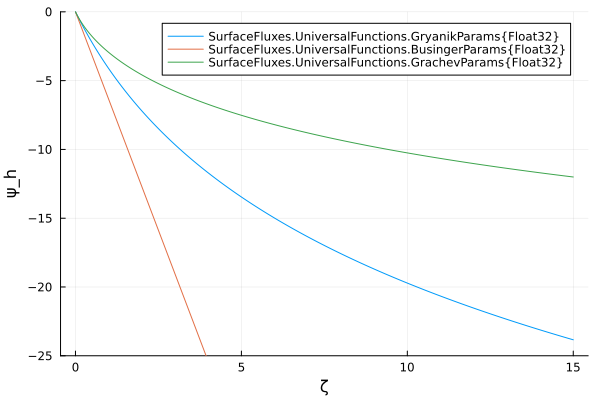
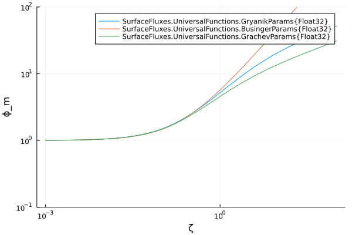
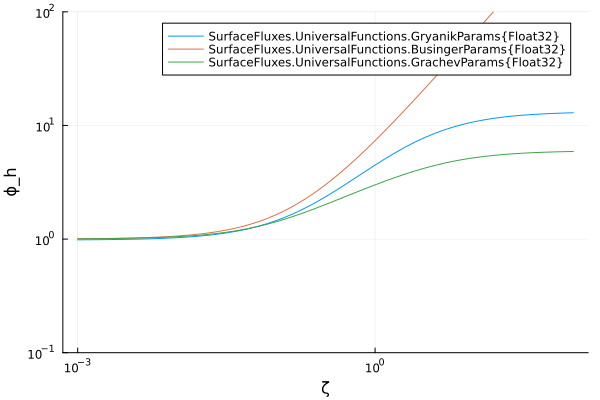
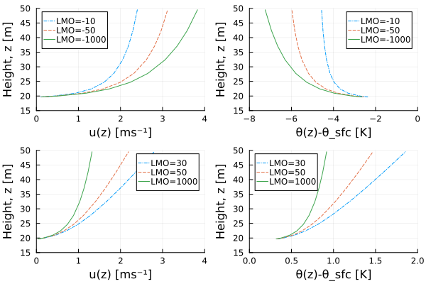

Universal Functions in SurfaceFluxes.jl
UniversalFunctions.jl provides the stability functions (universal functions) required by Monin-Obukhov Similarity Theory (MOST) to calculate surface fluxes of momentum and heat/tracers. These functions describe the non-dimensional gradients of wind speed and potential temperature/tracers as a function of the stability parameter $\zeta = z/L$, where $z$ is height and $L$ is the Obukhov length.
The module supports three distinct parameterizations:
- Businger: The classic Businger-Dyer formulations (Businger et al. 1971, Dyer 1974).
- Gryanik: Improved functions for the stable boundary layer (Gryanik et al. 2020).
- Grachev: Functions derived from the SHEBA experiment for stable conditions over sea ice (Grachev et al. 2007).
Mathematical Framework
In MOST, the vertical gradients of mean wind speed ($u$) and potential temperature ($\theta$) are scaled by the friction velocity ($u_*$) and temperature scale ($\theta_*$) according to
\[\begin{equation} \frac{\kappa z}{u_*} \frac{\partial u}{\partial z} = \phi_m(\zeta) \end{equation}\]
and
\[\begin{equation} \frac{\kappa z}{\theta_*} \frac{\partial \theta}{\partial z} = \phi_h(\zeta), \end{equation}\]
where $\phi_m$ and $\phi_h$ are the universal stability functions for momentum and heat, respectively, and $\kappa \approx 0.4$ is the von Kármán constant.
We also define the integrated stability correction functions ($\psi$) that define corrections to logarithmic profiles, including their volume-averaged forms ($\Psi$) used with finite-volume schemes:
- The function $\psi(\zeta)$: The standard integral form used to correct point profiles (for finite-difference schemes):
\[\begin{equation} \psi(\zeta) = \int_{0}^{\zeta} \frac{\phi(0) - \phi(x)}{x} dx. \end{equation}\]
This function is used to obtain the wind profile:
\[\begin{equation} \label{eq:windprofile} u(z) = \frac{u_*}{\kappa} \left[ \ln\left(\frac{z}{z_0}\right) - \psi_m(\zeta) + \psi_m(\zeta_0) \right]. \end{equation}\]
Similarly, the potential temperature profile is obtained using the heat stability correction function:
\[\begin{equation} \label{eq:thetaprofile} \theta(z) = \theta_0 + \frac{\theta_*}{\kappa} \left[ \ln\left(\frac{z}{z_{0h}}\right) - \psi_h(\zeta) + \psi_h(\zeta_0) \right], \end{equation}\]
where $\theta_0$ is the surface potential temperature, $\theta_*$ is the temperature scale, and $z_{0h}$ is the roughness length for heat.
- The function $\Psi(\zeta)$: The volume-averaged form required when model variables represent cell averages (in finite-volume schemes) rather than point values (Nishizawa & Kitamura, 2018):
\[\begin{equation} \Psi(\zeta) = \frac{1}{\zeta} \int_{0}^{\zeta} \psi(x) dx. \end{equation}\]
For finite-volume schemes, where fluxes are computed using cell-averaged values, this function is used in lieu of $\psi(\zeta)$.
1. Businger-Dyer Functions
The Businger parameterization is the standard formulation for the unstable and weakly stable boundary layer. Our implementation follows the forms detailed in Nishizawa & Kitamura (2018), which provides a unified treatment of both stable and unstable conditions.
Parameter Structure
The BusingerParams struct contains:
a_m,a_h: Linear coefficients for stable conditions (denoted as $\beta$ in some texts)b_m,b_h: Coefficients inside the unstable sqrt/cbrt terms (denoted as $\gamma$ in the unstable forms)Pr_0: The neutral Prandtl number
Unstable Conditions ($\zeta < 0$)
For unstable conditions, the functions follow the Dyer-Hicks form (Nishizawa & Kitamura 2018, Eqs. A1-A2 for $L < 0$):
\[\begin{equation} \phi_m(\zeta) = (1 - b_m \zeta)^{-1/4}, \end{equation}\]
and
\[\begin{equation} \phi_h(\zeta) = (1 - b_h \zeta)^{-1/2}, \end{equation}\]
where, typically, $b_m=15$ and $b_h=9$.
The corresponding integrated functions ($\psi$) involve logarithmic and arctangent terms (Nishizawa & Kitamura 2018, Eqs. A3-A4 for $L < 0$):
\[\begin{equation} \psi_m(\zeta) = \ln\left[\frac{(1 + x)^2(1 + x^2)}{8}\right] - 2\tan^{-1}(x) + \frac{\pi}{2}, \end{equation}\]
where $x = (1 - b_m \zeta)^{1/4}$, and
\[\begin{equation} \psi_h(\zeta) = 2\ln\left(\frac{1 + y}{2}\right), \end{equation}\]
where $y = (1 - b_h \zeta)^{1/2}$.
Stable Conditions ($\zeta \ge 0$)
For stable conditions, the Businger-Dyer functions are linear (Nishizawa & Kitamura 2018, Eqs. A1-A2 for $L \ge 0$):
\[\begin{equation} \phi_m(\zeta) = 1 + a_m \zeta \end{equation}\]
and
\[\begin{equation} \phi_h(\zeta) = 1 + \frac{a_h \zeta}{\text{Pr}_0}. \end{equation}\]
The integrated forms are (Nishizawa & Kitamura 2018, Eqs. A3-A4 for $L \ge 0$):
\[\begin{equation} \psi_m(\zeta) = -a_m \zeta \end{equation}\]
and
\[\begin{equation} \psi_h(\zeta) = -\frac{a_h \zeta}{\text{Pr}_0}. \end{equation}\]
Volume-Averaged Forms
The volume-averaged functions $\Psi$ are implemented for both momentum and heat transport, following Nishizawa & Kitamura (2018, Eqs. A5-A6, A13-A14).
Stable Conditions ($\zeta \ge 0$):
For stable conditions, the volume-averaged functions reduce to:
\[\begin{equation} \Psi_m(\zeta) = -\frac{a_m \zeta}{2} \end{equation}\]
and
\[\begin{equation} \Psi_h(\zeta) = -\frac{a_h \zeta}{2 \text{Pr}_0}. \end{equation}\]
Unstable Conditions ($\zeta < 0$):
For unstable conditions, the volume-averaged functions are more complex (Nishizawa & Kitamura 2018, Eqs. A5-A6 for $L < 0$):
For momentum:
\[\begin{equation} \Psi_m(\zeta) = \ln\left[\frac{(1 + x)^2(1 + x^2)}{8}\right] - 2\tan^{-1}(x) + \frac{\pi}{2} - 1 + \frac{1 - x^3}{3b_m \zeta/4}, \end{equation}\]
where $x = (1 - b_m \zeta)^{1/4}$. For small $\zeta$, this reduces to $\Psi_m(\zeta) \approx -b_m \zeta/8$ (Nishizawa & Kitamura 2018, Eq. A13).
For heat:
\[\begin{equation} \Psi_h(\zeta) = 2\ln\left(\frac{1 + y}{2}\right) + \frac{2(1 - y)}{b_h \zeta} - 1, \end{equation}\]
where $y = (1 - b_h \zeta)^{1/2}$. For small $\zeta$, this reduces to $\Psi_h(\zeta) \approx -b_h \zeta/4$ (Nishizawa & Kitamura 2018, Eq. A14).
2. Gryanik Universal Functions
The Gryanik et al. (2020) parameterization is designed to improve surface flux calculations in the stable boundary layer. It addresses issues where standard functions underestimate fluxes in very stable conditions.
Parameter Structure
The GryanikParams struct contains:
a_m,b_m: Coefficients for momentum stability functiona_h,b_h: Coefficients for heat stability functionPr_0: Neutral Prandtl number (the paper recommends $\text{Pr}_0 \approx 0.98$)b_m_unstable,b_h_unstable: Parameters for unstable branch (automatically set from Businger values)
The unstable branch parameters (b_m_unstable and b_h_unstable) are automatically set to the Businger parameter values to ensure consistency. This means the unstable branches of Gryanik functions use the same coefficients as the Businger formulation.
Stable Conditions ($\zeta > 0$)
Gryanik proposes new forms that remain valid across the entire stability range.
Momentum ($\phi_m$):
\[\begin{equation} \phi_m(\zeta) = 1 + \frac{a_m \zeta}{(1 + b_m \zeta)^{2/3}}. \end{equation}\]
Heat ($\phi_h$):
\[\begin{equation} \phi_h(\zeta) = \text{Pr}_0 \left( 1 + \frac{a_h \zeta}{1 + b_h \zeta} \right) \end{equation}\]
Note that $\phi_h(0) = \text{Pr}_0$ for Gryanik, unlike Businger where $\phi_h(0) = 1$.
Integrated Corrections ($\psi$): The code implements the analytical integrals derived in the paper:
\[\begin{equation} \psi_m(\zeta) = -3 \frac{a_m}{b_m} \left[ (1 + b_m \zeta)^{1/3} - 1 \right], \end{equation}\]
and
\[\begin{equation} \psi_h(\zeta) = -\text{Pr}_0 \frac{a_h}{b_h} \ln(1 + b_h \zeta). \end{equation}\]
Volume-Averaged Forms ($\Psi$): The volume-averaged functions are analytically derived from the $\psi$ functions:
\[\begin{equation} \Psi_m(\zeta) = 3\frac{a_m}{b_m} - \frac{9 a_m}{4 b_m^2 \zeta} \left[ (1 + b_m \zeta)^{4/3} - 1 \right] \end{equation}\]
and
\[\begin{equation} \Psi_h(\zeta) = -\frac{\text{Pr}_0 a_h}{b_h \zeta} \left[ \left(\frac{1}{b_h} + \zeta\right) \ln(1 + b_h \zeta) - \zeta \right]. \end{equation}\]
Unstable Conditions ($\zeta < 0$)
For the unstable regime, Gryanik et al. (2020) recommend reverting to the standard Businger-Dyer forms to ensure continuity at $\zeta=0$. Our implementation uses the Businger unstable forms with coefficients b_m_unstable and b_h_unstable (which are set from Businger parameters). The unstable heat function is scaled by $\text{Pr}_0$ to ensure a continuous transition at the neutral limit ($\zeta=0$):
\[\begin{equation} \phi_h(\zeta) = \text{Pr}_0 \cdot \phi_{h,\text{Businger}}(\zeta; b_h = b_{h,\text{unstable}}) \end{equation}\]
3. Grachev Universal Functions
The Grachev et al. (2007) functions were derived from measurements of the stable atmospheric boundary layer over sea ice from the SHEBA dataset.
Parameter Structure
The GrachevParams struct contains:
a_m,b_m: Coefficients for momentum stability functiona_h,b_h,c_h: Coefficients for heat stability function (note:c_his the coefficient for the linear $\zeta$ term in the denominator)b_m_unstable,b_h_unstable: Parameters for unstable branch (automatically set from Businger values)
Similar to Gryanik, the unstable branch parameters are automatically set from Businger values to ensure consistency.
Stable Conditions ($\zeta > 0$)
Momentum ($\phi_m$):
\[\begin{equation} \phi_m(\zeta) = 1 + \frac{a_m \zeta (1 + \zeta)^{1/3}}{1 + b_m \zeta}. \end{equation}\]
Heat ($\phi_h$):
\[\begin{equation} \phi_h(\zeta) = 1 + \frac{a_h \zeta + b_h \zeta^2}{1 + c_h \zeta + \zeta^2}. \end{equation}\]
Integrated Corrections ($\psi$): The integrated forms are complex, involving multiple logarithmic and arctangent terms. See Grachev et al. (2007, Eqs. 12 and 13) for the full derivation.
For momentum (Grachev et al. 2007, Eq. 12):
\[\begin{equation} \psi_m(\zeta) = -3\frac{a_m}{b_m}(x - 1) + \frac{a_m B_m}{2 b_m} \left[ 2\ln\left(\frac{x + B_m}{1 + B_m}\right) - \ln\left(\frac{x^2 - x B_m + B_m^2}{1 - B_m + B_m^2}\right) + 2\sqrt{3}\left(\arctan\left(\frac{2x - B_m}{\sqrt{3} B_m}\right) - \arctan\left(\frac{2 - B_m}{\sqrt{3} B_m}\right)\right) \right], \end{equation}\]
where $x = (1 + \zeta)^{1/3}$ and $B_m = ((1 - b_m)/b_m)^{1/3}$.
For heat (Grachev et al. 2007, Eq. 13):
\[\begin{equation} \psi_h(\zeta) = -\frac{b_h}{2} \ln(1 + c_h \zeta + \zeta^2) + \left[-\frac{a_h}{B_h} + \frac{b_h c_h}{2 B_h}\right] \left[\ln\left(\frac{2\zeta + c_h - B_h}{2\zeta + c_h + B_h}\right) - \ln\left(\frac{c_h - B_h}{c_h + B_h}\right)\right], \end{equation}\]
where $B_h = \sqrt{c_h^2 - 4}$.
Unstable Conditions ($\zeta < 0$)
Similar to Gryanik, the Grachev parameterization falls back to the Businger-Dyer forms for unstable conditions, using the b_m_unstable and b_h_unstable parameters.
The volume-averaged function $\Psi(\zeta)$ is not implemented for Grachev due to the lack of closed-form analytical integrals for these complex functions.
Visualization of Universal Functions
The following plots compare the behavior of these functions across different stability regimes and reproduce figures from the literature.
Comparison with Gryanik et al. (2020)
The following plots reproduce Figures 1 and 2 from Gryanik et al. (2020), showing the behavior of $\phi$ and $\psi$ in stable conditions.
include("plot_universal_functions.jl")Figures 1 & 2: Stable Conditions (Linear Scale)
Momentum stability function $\phi_m$ for stable conditions.

Heat stability function $\phi_h$ for stable conditions. Note that Gryanik has $\phi_h(0) = \text{Pr}_0 \approx 0.98$.

Momentum stability correction function $\psi_m$ for stable conditions.

Heat stability correction function $\psi_h$ for stable conditions.

Figure 3: Extended Stability Range (Log-Log Scale)
Momentum stability function $\phi_m$ over extended stability range (log-log scale).

Heat stability function $\phi_h$ over extended stability range (log-log scale).

Comparison with Businger (1971)
The classic Businger et al. (1971) curves for $\phi_m$ and $\phi_h$, along with the other parameterizations, across both stable and unstable conditions.
Momentum stability functions $\phi_m$ for stable and unstable conditions, illustrating continuity across the regimes and convergence of all parameterizations to the Businger-Dyer forms in the unstable regime.

Heat stability function $\phi_h$ for stable and unstable conditions, illustrating continuity across the regimes and convergence of all parameterizations to the Businger-Dyer forms in the unstable regime.

Profile Recovery Example
The following figure demonstrates profile recovery using the universal functions, reproducing Figure 6.4 from Bonan (2019). The profiles are computed using the wind and potential temperature profile equations (equations \eqref{eq:windprofile} and \eqref{eq:thetaprofile}) with the Businger-Dyer parameterization for both stable and unstable conditions. This shows how the universal functions are used to reconstruct vertical profiles of wind speed and potential temperature from surface flux parameters.
Profile recovery for wind speed (left) and potential temperature (right) under different stability conditions. The figure shows profiles for unstable conditions (LMO = -10, -50, -1000) and stable conditions (LMO = 30, 50, 1000), demonstrating how the universal functions capture the stability dependence of the boundary layer structure.

Test Suite
The universal functions are thoroughly tested to ensure correctness, numerical stability, and mathematical consistency. The test suite (test/test_universal_functions.jl) verifies the following properties:
Type Stability
Test: Type stability
Verifies that all functions return values of the correct floating-point type (Float32 or Float64) matching the input parameter type. This is tested across:
- Fine grids covering a wide range of stability parameters ($\zeta$ from -2 to 200)
- Values very close to zero (near machine epsilon)
- All parameterizations (Businger, Gryanik, Grachev)
- Both momentum and heat transport
Neutral Limit Behavior
Test: Neutral logarithmic velocity profile
Verifies that in the neutral limit ($L \to \infty$, i.e., $\zeta \to 0$), the velocity profile collapses to the logarithmic law of the wall:
\[\begin{equation} u(z) = \frac{u_*}{\kappa} \ln\left(\frac{z}{z_0}\right) \end{equation}\]
This is tested by using a very large Obukhov length and verifying that the stability correction terms vanish, leaving only the logarithmic term.
Asymptotic Behavior
Test: Asymptotic behavior (|ζ| → ∞)
For very stable conditions ($\zeta \gg 1$), the functions should approach their asymptotic limits. This test verifies:
- Gryanik: $\phi_m(\zeta) \sim (a_m/b_m^{2/3}) \zeta^{1/3}$ and $\phi_h(\zeta) \sim 1 + (\text{Pr}_0 a_h \zeta)/(1 + b_h \zeta)$
- Grachev: $\phi_m(\zeta) \sim (a_m/b_m) \zeta^{1/3}$ and $\phi_h(\zeta) \sim 1 + b_h$
These asymptotic forms are important for very stable boundary layers where standard functions may fail.
Monotonicity
Test: Monotonicity of ϕ(ζ)
Verifies that $\phi(\zeta)$ is monotonically increasing with $\zeta$ across the entire stability range (both stable and unstable). This is a fundamental physical property: as stability increases (larger $\zeta$), the gradient should increase. The test allows for small numerical noise near zero.
Boundary Conditions
Test: ψ(0) == 0
Verifies that the integrated stability correction function $\psi$ satisfies the boundary condition $\psi(0) = 0$, which is required by the definition:
\[\begin{equation} \psi(\zeta) = \int_0^{\zeta} \frac{\phi(0) - \phi(x)}{x} dx \end{equation}\]
Continuity at Neutral Conditions
Test: Neutral continuity (ζ → 0)
Verifies that all functions are continuous at $\zeta = 0$, meaning:
- The limit $\lim_{\zeta \to 0^+} \phi(\zeta) = \lim_{\zeta \to 0^-} \phi(\zeta) = \phi(0)$
- The limit $\lim_{\zeta \to 0^+} \psi(\zeta) = \lim_{\zeta \to 0^-} \psi(\zeta) = \psi(0)$
- The limit $\lim_{\zeta \to 0^+} \Psi(\zeta) = \lim_{\zeta \to 0^-} \Psi(\zeta) = \Psi(0)$ (where implemented)
This ensures continuous transitions between stable and unstable regimes.
Derivative Consistency
Test: Derivative consistency ϕ(ζ) ≈ ϕ(0) - ζ·ψ'(ζ)
Verifies the mathematical relationship between $\phi$ and $\psi$:
\[\begin{equation} \phi(\zeta) = \phi(0) - \zeta \cdot \frac{d\psi}{d\zeta} \end{equation}\]
This is tested using finite-difference approximations of $\psi'(\zeta)$ and comparing against the analytical $\phi(\zeta)$. This relationship follows from the definition of $\psi$ and ensures internal consistency of the implementation.
Integral Consistency
Test: Integral consistency ψ(ζ) = ∫(ϕ(0)-ϕ)/ζ′ dζ′
Verifies that the analytical implementation of $\psi(\zeta)$ matches the integral definition:
\[\begin{equation} \psi(\zeta) = \int_{\epsilon}^{\zeta} \frac{\phi(0) - \phi(x)}{x} dx. \end{equation}\]
This is tested using numerical quadrature (Gauss-Kronrod) to compute the integral and comparing against the analytical $\psi$ function. This ensures that the analytical integrals derived in the papers are correctly implemented.
Small-$\zeta$ Linearization
Test: Small-ζ Linearization Consistency
For very small $\zeta$, the volume-averaged function $\Psi$ should satisfy:
\[\begin{equation} \lim_{\zeta \to 0} \frac{\Psi(\zeta)}{\zeta} = -\frac{\phi'(0)}{2} \end{equation}\]
This test verifies that the linear approximations used near zero in the $\Psi$ implementations are consistent with the theoretical slope derived from the $\phi$ parameters. This is important for numerical stability when $\zeta$ is very close to zero.
References
Businger, J. A., Wyngaard, J. C., Izumi, Y., & Bradley, E. F. (1971). Flux-profile relationships in the atmospheric surface layer. Journal of the Atmospheric Sciences, 28, 181-189. https://doi.org/10.1175/1520-0469(1971)028<0181:FPRITA>2.0.CO;2
Dyer, A. J. (1974). A review of flux-profile relationships. Boundary-Layer Meteorology, 7, 363-372. https://doi.org/10.1007/BF00240838
Gryanik, V. M., Lüpkes, C., Grachev, A., and Sidorenko, D. (2020). New modified and extended stability functions for the stable boundary layer based on SHEBA and parametrizations of bulk transfer coefficients for climate models. Journal of the Atmospheric Sciences, 77, 2687–2716. https://doi.org/10.1175/JAS-D-19-0255.1
Grachev, A. A., Andreas, E. L., Fairall, C. W., Guest, P. S., and Persson, P. O. G. (2007). SHEBA flux–profile relationships in the stable atmospheric boundary layer. Boundary-Layer Meteorology, 124, 315–333. https://doi.org/10.1007/s10546-007-9177-6
Nishizawa, S., & Kitamura, Y. (2018). A surface flux scheme based on the Monin-Obukhov similarity for finite volume models. Journal of Advances in Modeling Earth Systems, 10, 1-17. https://doi.org/10.1029/2018MS001534
Bonan, G. (2019). Climate Change and Terrestrial Ecosystem Modeling. Cambridge University Press. ISBN: 978-1-107-04378-7